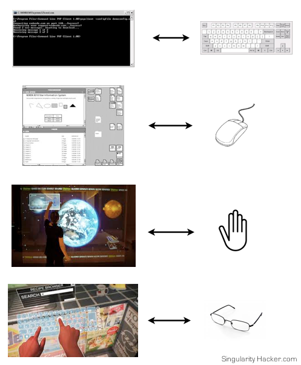
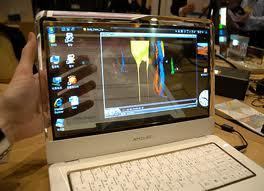
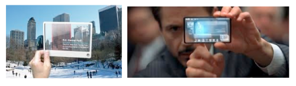

Augmented Reality: Living in Cyberspace
Originally published at https://singularityhacker.com/augmented-reality-living-in-cyberspace
The evolution of human/machine interface will travel through several definable epochs. Each epoch does not make the previous obsolete but does drastically alter and improve the efficiency and ease of our interaction with technology and information.
The evolution can be described and visualized as follows:
Text - Graphical - Haptic - Immersive

Augmented reality is the ultimate foreseeable culmination of the user interface. It is the most direct way to interact with information because it places the UI around you. It’s as if you stepped inside a computer simulation.
There are certain necessary technological steps that we must pass through before getting display glasses that throw us into 24/7 simulation space. One very large challenges is transparent display technology. Fortunately, Samsung has just announced that they will be bringing laptops with transparent displays to market within the next year.

As the efficiency of producing transparent displays increases, we will see the technology in smaller form factors. Transparent displays will find their way into our cell phones and tablets. Notice that AR is one of the only real advantages to designing devices with transparent displays.

In time, the technology will reach a point where it is feasible to wear. This will usher in the fully immersive augmented reality world. Entirely new challenges of user interface will present themselves that make the UI challenges associated with the move from mouse to touch oriented seem small in comparison.

Augmented reality will culminate in a fully immersive experience like the one shown in the video below.
Augmented reality will open new worlds. Listen and see: 2 Hi3 Fr0m Far Cil3nia Pt. 1 (mp3) 2 Hi3 Fr0m Far Cil3nia Pt. 2 (mp3)